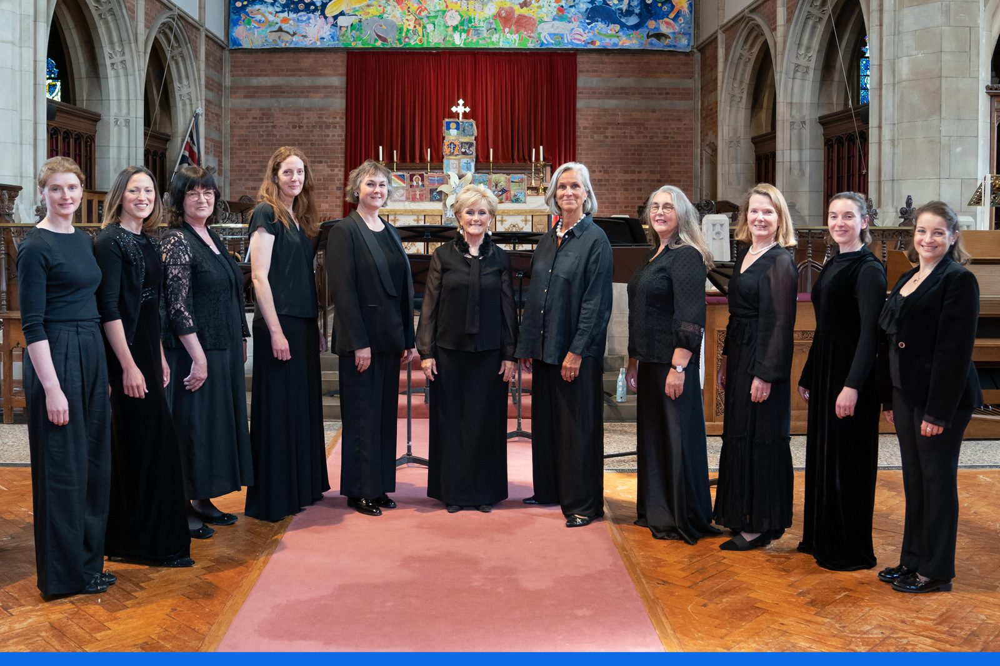
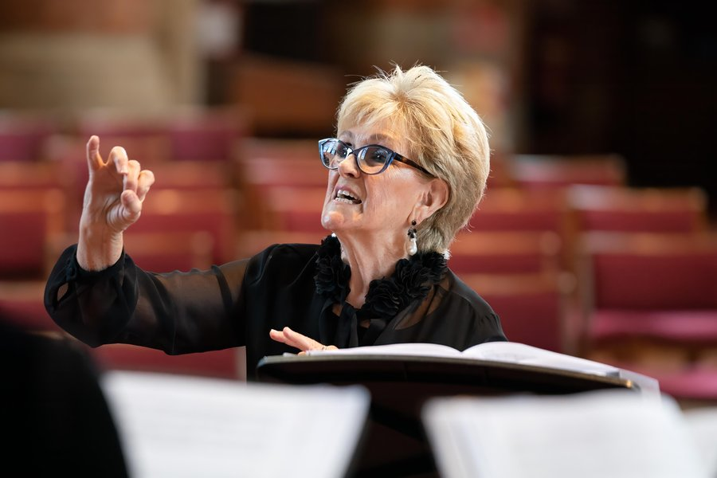

Who We Are
The Jenny Lind Singers is a group of talented local female singers, some semi-professional, who are sensitive and passionate performers. They present several concerts a year in which they explore new music, especially by women and local composers, including the award-winning composers Liz Dilnot Johnson and Kate Hill.
Under the leadership of conductor Lynne Lindner, this virtuosic female voice choir celebrates the legacy of soprano and friend of Edward Elgar, Jenny Lind, who lived in Malvern for the latter part of her life and was a well-known benefactor of education and the arts.
Read about our ethos →The Team

© Michael Whitefoot · @whitefootimages
Lynne Lindner
Conductor & Director
Lynne Lindner re-founded the Jenny Lind Singers in 2013 during her time as Director of Music at Malvern St James Girls' School. Under her direction, the choir has grown into a professional-standard ensemble celebrated for its interpretative intelligence and adventurous programming.
Tim Sidford
Regular Accompanist
Tim Sidford is a professional pianist who serves as the choir's principal accompanist. The ensemble is also accompanied by harpists Nia Evans and Anwen Mai Thomas for select programmes.
Our History
The Jenny Lind Singers Founded
The original Jenny Lind Singers was established at Malvern Girls' College by Eric Hemery and Elaine Hugh-Jones. The group performed and recorded before eventually coming to an end.
Re-founded by Lynne Lindner
The choir was re-established by Lynne Lindner, then Director of Music at Malvern St James Girls' School. The ensemble now comprises local adult female singers, many of them professional or semi-professional.
IVORS Composer Award — Liz Dilnot Johnson
Liz Dilnot Johnson, a composer closely associated with the Jenny Lind Singers and based in West Malvern, wins the IVORS Composer Award — one of the UK's most prestigious honours for composers.
World Premiere: Nimrod Reimagined
The Jenny Lind Singers commission and give the world premiere of Nimrod Reimagined by Liz Dilnot Johnson — a bold reimagining of Elgar's most beloved work for women's voices.
Elgar Festival & Beyond
The ensemble performs at the prestigious Elgar Festival in Worcester — returning by popular demand — and continues to champion the music of women composers past and present across three concerts in 2026.
Our Patron
Countess Dr Inga Lewenhaupt
Former Chair of the Jenny Lind Society of Sweden